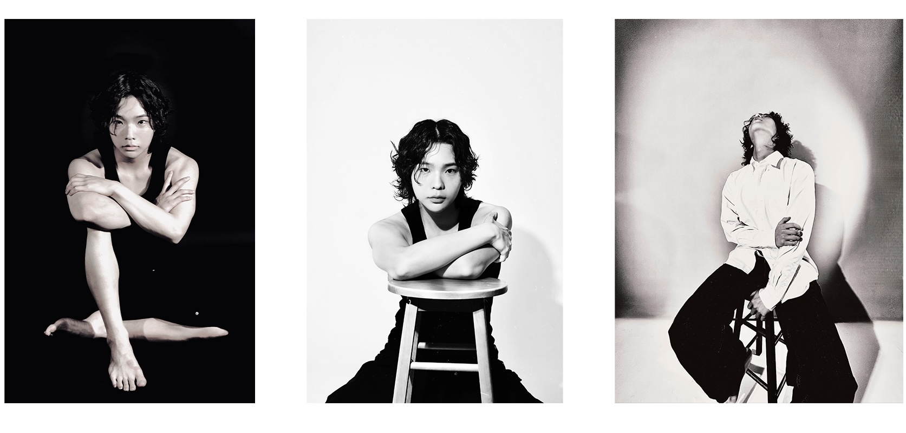

04
Actor Profile
Directed and photographed a performance-based actor profile focused on emotional pacing, expression, and visual restraint.


Project Overview
This project focused on building an actor profile through emotional pacing, gesture, and controlled visual direction rather than traditional headshot conventions.
The direction centered on performance, atmosphere, and restrained expression to create a more cinematic and character-driven visual identity.